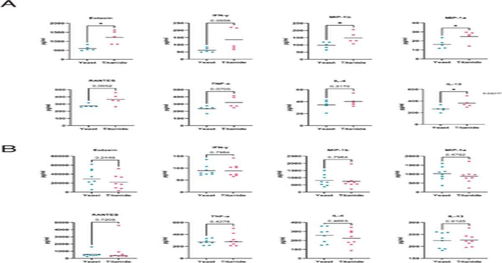

Титанид Cryptococcus neoformans представляет собой патогенный тип клеток, который возникает из типичных дрожжевых клеток в ответ на условия хозяина
эбигейл М.
Поттон, Яна Калинина, Гордон Д.
Браун, Мария Макарова, Сандра Катания, Дора Е.
Корзо-Леон, Элизабет Р.
Баллу Морфогенез грибков является основным фактором исхода заболевания.
Для условно-патогенного грибкового патогена Cryptococcus neoformans экстремальная морфологическая гетерогенность в легочной среде стимулирует распространение, уклонение от иммунитета и лекарственную устойчивость.
Одним из таких типов клеток является маленький, овальный, титанид (2–4 мкм).
Это плохо